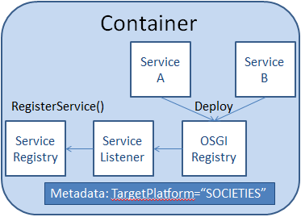

On the cloud node, Service Discovery has a listener registered with the OSGI registry for deployed bundles being added/removed from the OSGI Registry. To allow your 3rd Party Service to be picked up by Service Discovery, it will need to contain a TargetPlatform property of "SOCIETIES". Below is the bundle-context-osgi.xml file for the Calculator Service, an example.
The serMetaModel bean contains part of the ServiceModel's metadata for that service. It does not contain all, however. Metadata such as version, bundle ID are part of the implementation and are read directly from the OSGI registry when deployed. The ServiceResouceIdentifier is also generated at run-time.
The Service Category and Service Type metadata parameters might cause some confusion due to the similar names, but serve vastly different purposes.
Service Category is a free text property field, where the developer might tag the service with a keyword that indicates its purpose e.g. media player.
Service Type, on the other hand, tells the platform about the deployment strategy of the 3rd party service, as regards service sharing. It may take three values:
As a point of note, when a 3rd Party Service is of the THIRD_PARTY_SERVER type then it may also include the ServiceClient property, pointing to the .jar of the client bundle. If it does not, then the service will not be allowed to be shared.
The privacyPolicy parameter points to the privacy-policy.xml. It should only be included if the privacy-policy.xml has not been added to the bundle.